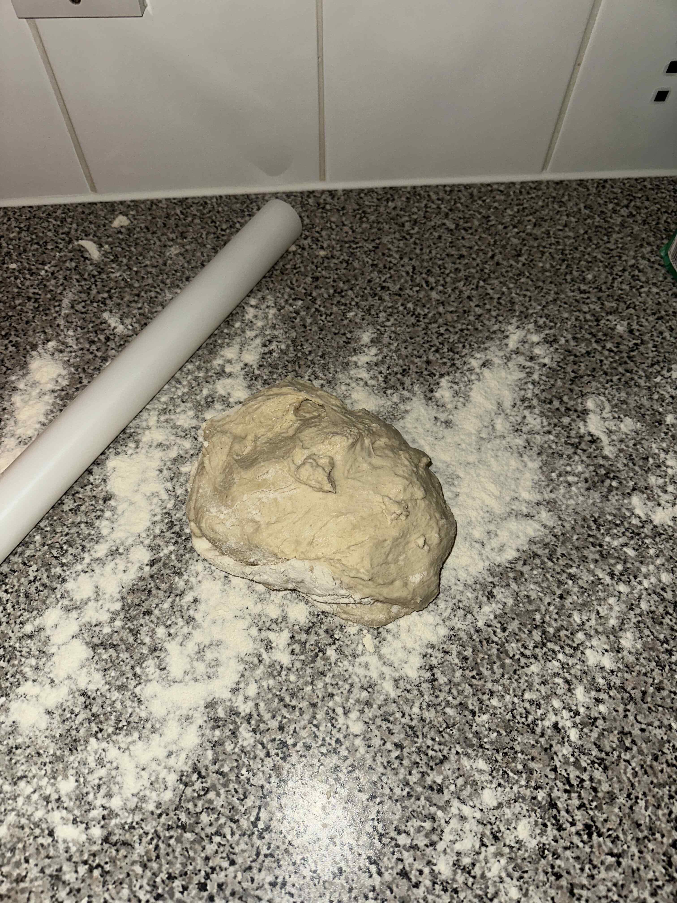
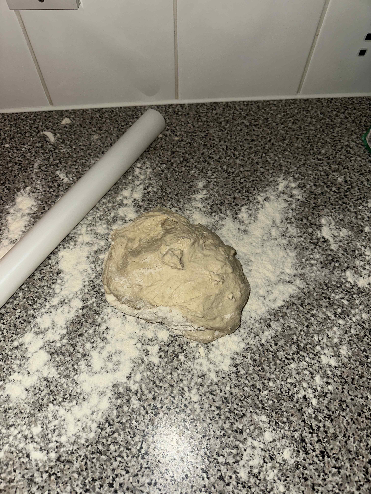

1.Equipment for Pizza Toppings
- Rolling pin
- Flour for dusting
- Knife to cut dough
- Knife to cut toppings (optional)
- Baking paper/greaseproof paper
2.Ingredients for Pizza Toppings
- Pizza sauce - either store bought around 300g, or the pizza sauce you made earlier, make sure it has cooled down before use
- 500g of grated cheese of choice - I used around 700g of mixed cheese as I was making several smaller pizzas, but you can choose how much cheese to use
- Pizza toppings of choice - I used various vegetarian toppings, mixed baby peppers and sliced shallots
3.Steps for Pizza Toppings
Prep Time: 20 minutes
Cooking Time: 12-18 minutes (varies depending on type of oven)
- Preheat oven to 180°C (fan oven) / Gas mark 4
- Once the pizza dough has rested for between 1 hour to 1.5 hours, bring it back to your work surface, it will have doubled in size while resting in a warm place. Dust your work surface with some flour, and place the dough down on it
- At this point, you can decide how to roll out your pizza. Use the knife to section the dough into smaller bits, then roll into a ball-like shape and start to roll it out. Remember to roll in both directions and then flip it over to the other side to get your shape. You can make different shapes, that is your preference, once rolled out, lightly sprinkle some flour onto your baking paper and place the rolled out dough onto it
- Repeat step 3 until you have rolled out all the dough to your liking
- Now you are ready to start spreading your pizza sauce onto the base and placing your toppings on
- Put some pizza sauce onto the base and spread it out across the whole base to your liking. I also added some sundried tomato pesto to my base with the pizza sauce as this is a personal preference
- After putting the sauce onto the pizza base, you're ready to start spreading your cheese and adding your toppings, do this to your liking. After putting my toppings on the pizza, I put a bit of cheese on top of the pizza and added some of my left over home made pizza sauce on top of the pizza
- Place the pizza onto a baking tray if you are cooking it now
 


4.Pizza Cooking Times
Now you are ready to cook your pizza, please note that cooking times may vary - the cooking times listed below are for an fan oven on 180°C
- Large pizza (similar to image at top of page): 18 minutes
- Small-medium pizza: 12-15 minutes
- Once cooked allow to rest for a minute, then slice however you like and enjoy your home-made pizza! 😁